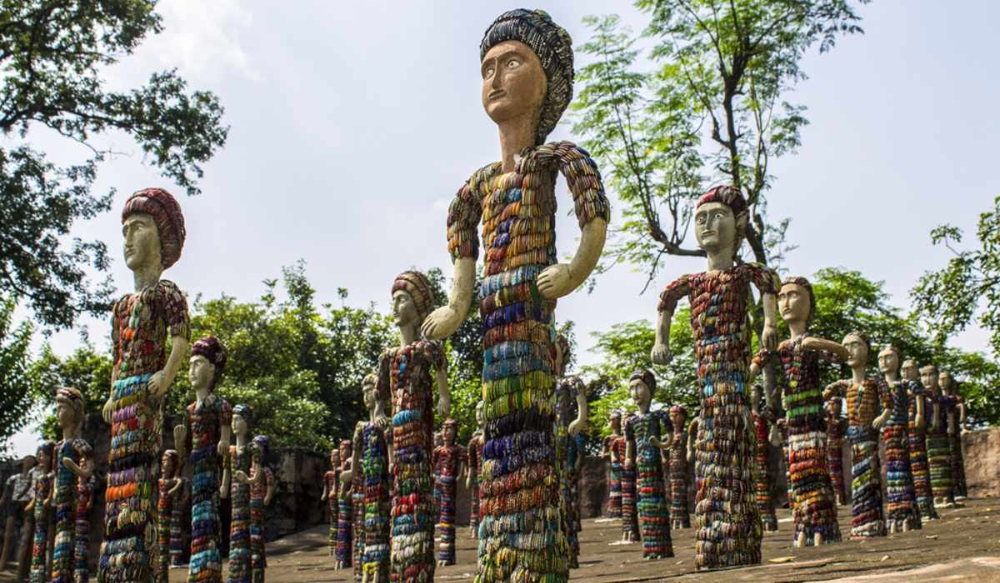
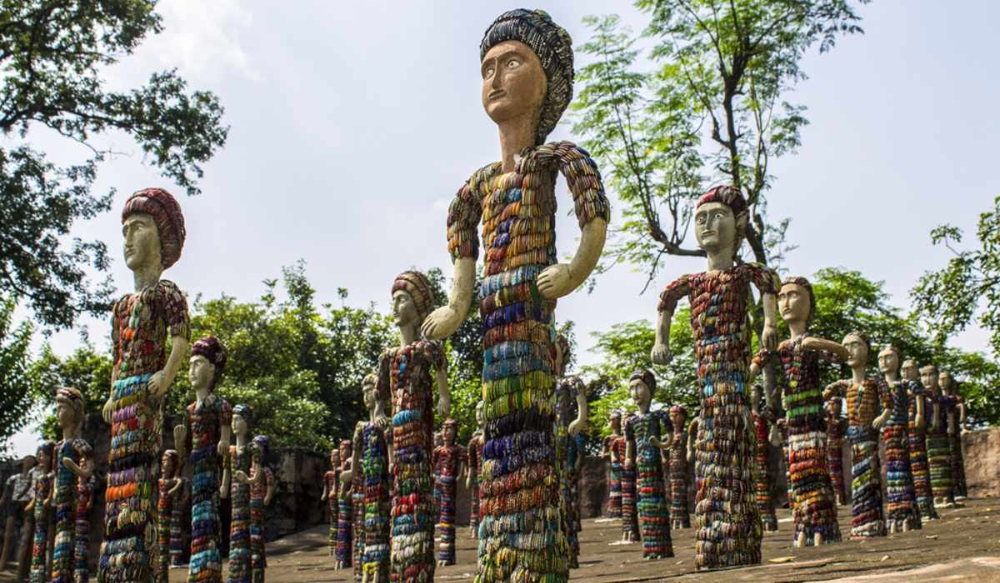

Rock Garden - Kanke
Famous for its scenic views, sculptures & Lake Side beauty.
 


Rock Garden in Ranchi is a little escape built right on Gonda Hill, giving those breezy panoramic views of the city and the lake below. The place has stone pathways, quirky rock sculptures and a peaceful vibe that makes it perfect for an evening hangout or a quiet walk. It’s one of those spots where you can just sit, relax and soak in the scenery.
The nearby Kanke Dam adds major charm to the whole setting, especially during sunset when the sky becomes painted in a beautiful hue. Families, couples and tourists all end up here because it’s easy to reach and feels refreshingly different from the usual city rush. With its viewpoints, photo spots and calm surroundings, Rock Garden has basically become a go-to place for anyone wanting a simple but beautiful outing in Ranchi.
Highlights:
- Offers stunning hilltop views overlooking Kanke Dam & the city.
- Features unique rock sculptures and creatively designed pathways.
- Popular spot for peaceful walks, photography & sunset watching.
- Easy-to-reach weekend hangout with a calm, refreshing atmosphere.